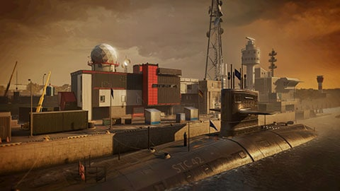
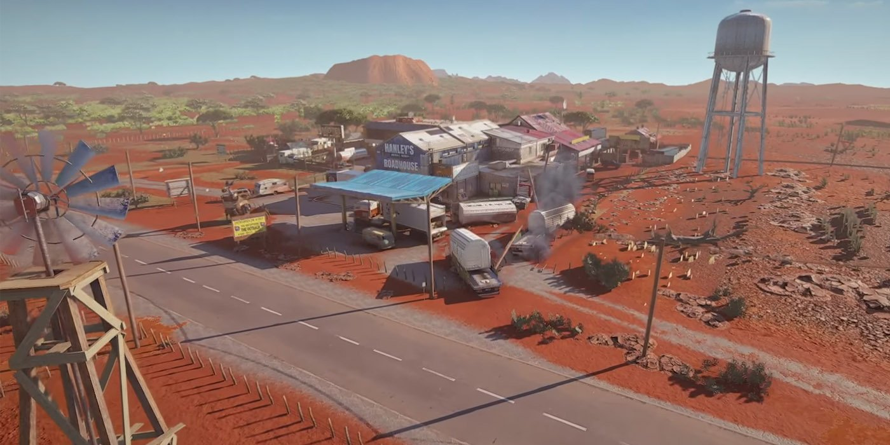

In Rainbow six siege zijn er vele maps, van rijke wijken tot sloppenwijken in Brazilië. Hieronder heb ik mijn twee favoriete maps toegevoegd.


Aan de linkerkant zie je de map New canal en ik vind deze map leuk omdat er geen rare kamertjes zijn waarin de vijanden kunnen verstoppen, verder is het ook overzichtelijk. Aan de linkerkant zie je de map Outback en ik vind deze map super leuk, omdat het leuk ontworpen is.